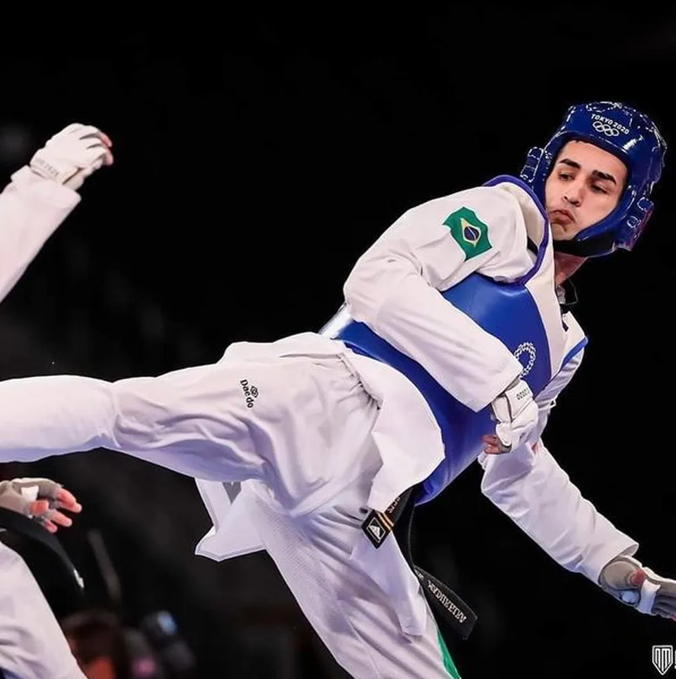

Taekwondo🥋
Faixas
- Faixa Branca / é a semente 🤍
- Branca ponta Amarela 🤍💛
- Faixa Amarela/ é a terra 💛
- Amarela ponta Verde 💛💚
- Faixa Verde/ é a planta💚
- Verde ponta Azul 💚💙
- Faixa Azul/ é o céu 💙
- Azul ponta Vermelha 💙💖
- Faixa Vermelha/ é o sol 💖
- Vermelha ponta Preta 💖🖤
- Faixa Preta/ o universo 🖤
Juramento do faixa Preta
Juro: 1- Manter sempre o espírito do Taekwondo, não parando de treinar até o fim de minha existência.
2- Cumprir o regulamento do Taekwondo, procurando jamais errar, pois eu sou faixa preta de Taekwondo.
3- Respeitar e obedecer por toda a minha existência a pessoa e os ensinamentos de meu mestre.
4- Respeitar e obedecer sempre os mais graduados do que eu e tratar com amor e carinho os menos graduados, e compreender que se eu não o fizer, estarei pronto a receber as penalidades existentes.

Netinho
Netinho está há um ano treinando no Rio de Janeiro, no Diego Team, um dos centros de formação de atletas de excelência no taekwondo no Brasil. Ele representa a Marinha do Brasil nas competições de que participa em todo o mundo, e tem um histórico de títulos importantes. Em 2014 ele foi campeão mundial juvenil de Taekwondo e, ainda, campeão olímpico da juventude. Foi campeão, em 2019 dos Jogos Mundiais Militares e do Pan-Americano de Lima, no Peru. Em 2022 foi vice campeão mundial adulto, e no ano passado ainda conquistou o Pan-Americano de Santiago no Chile por equipe e ainda tem diversas medalhas em Grand Prix. Netinho está em forma, diferentemente do que imaginava no início do ano, com a cabeça no lugar e pronto para o desafio. “Os resultados que tivemos no ano passado, somado a estas duas medalhas de prata que conquistamos são fatores muito fortes a meu favor”,
- Medalhas Conquistadas
- 🥇 Youth world and Olympic champion.
- 🥈 World Champ.
- 🥇 Pan Games.
- 🥇 Military Games.
- 🥈🥉 M Military